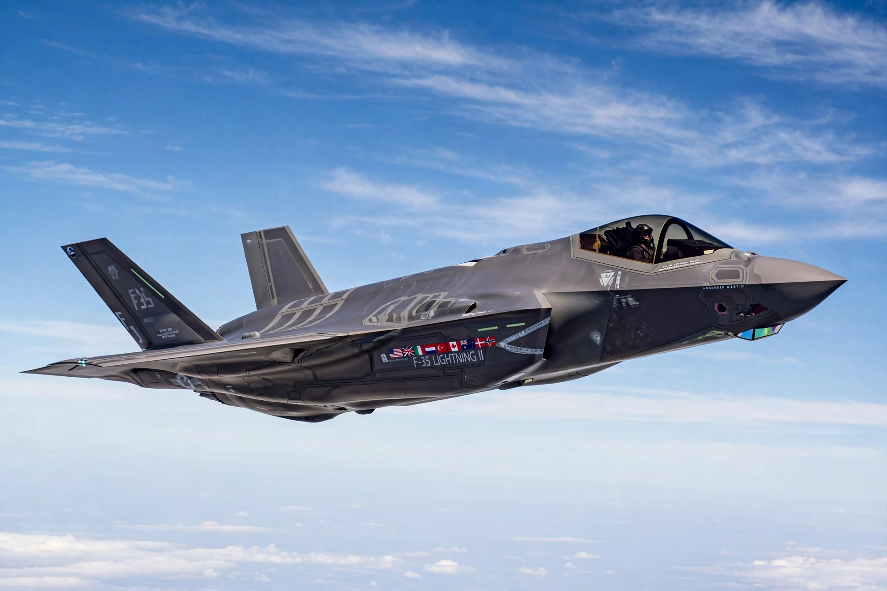

Lockheed Martin F-35 Lightning II
From Wikipedia, the free encyclopedia

An F-35B in flight.The Lockheed Martin F-35 Lightning II is an American family of single-seat, single-engine, stealth multirole fighters — the F-35A (conventional), F-35B (short take-off/vertical landing) and F-35C (carrier) — developed from the Joint Strike Fighter programme. The most expensive weapons programme in history and the most widely exported modern fighter, with over 1,000 delivered by the mid-2020s, it is designed to fuse sensor data and share it across a networked force.
Development
The JSF competition was won by Lockheed Martin\'s X-35 over Boeing\'s X-32 in 2001. Development overruns, software complexity (millions of lines of code) and concurrency — building aircraft before testing finished — drew sustained criticism, alongside genuine capability gains in sensors and stealth.
Service and operators
The US Marine Corps declared initial capability in 2015, the USAF in 2016, and Israel used the F-35 (\'Adir\') in combat first in 2018. Operators span NATO and Pacific allies; sales are politically significant, with some countries removed (Turkey, over its Russian S-400 purchase) and others queuing to join.
Criticism and cost
Unit prices have fallen to roughly US$80–100 million by variant and lot; sustainment costs and mission-capable rates (often reported around 50–55%) remain under scrutiny. Supporters call it a transformational sensor-shooter; critics cite cost and complexity.